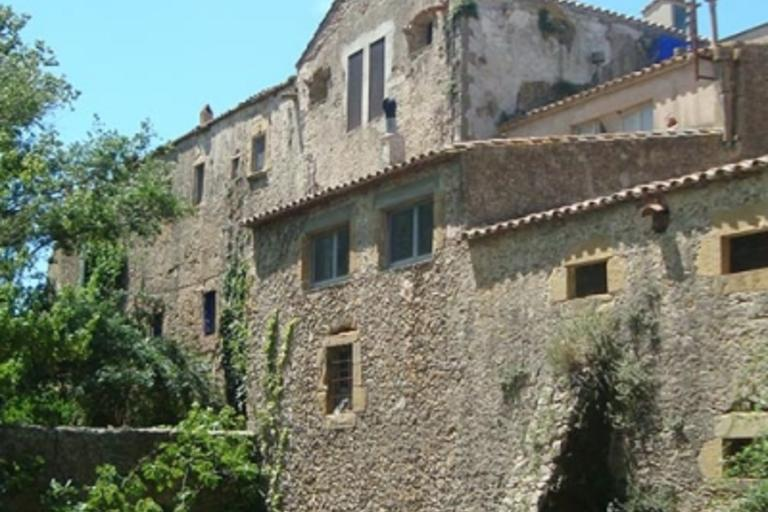

Visita · Montgrí
El Molí de Pals, també anomenat Molí Gros, Castell de Sant Miquel o Mas Tafurer, és una antiga construcció que ha estat castell, molí i mas durant cinc segles. El 6 de setembre de 1321, els…